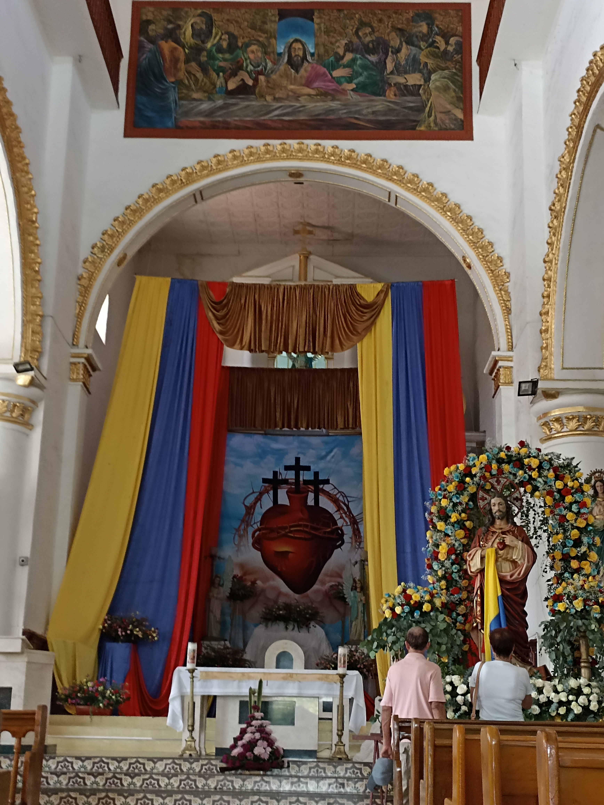
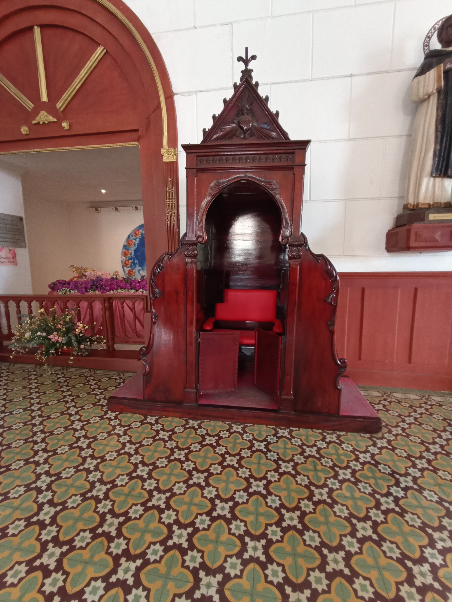
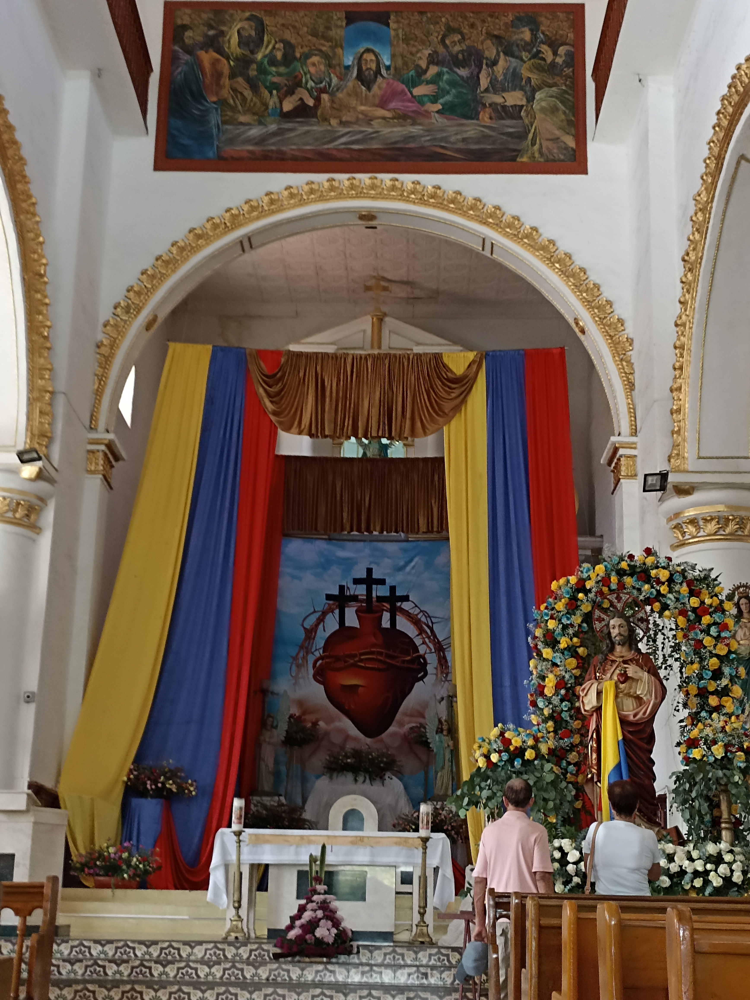
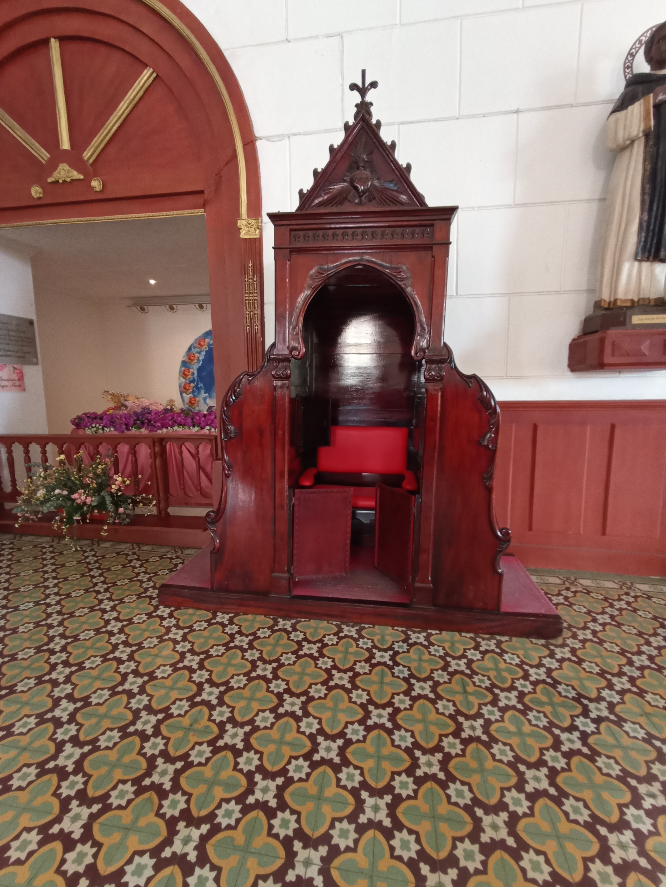

Sopetrán
Conocido como "el pueblo frutero de Colombía" y no es para menos aquí se cultiva todo tipo de frutas y verduras. A una hora de la ciudad de Medellín, por la doble calzada vía Urabá se encuentra este cálido terruño antioqueño. Habitado antes de la conquista española por comunidades indígenas nutabes y tahamies. Fundado en 1616 por Francisco Herrera y Campuzano y erigido municipio en 1814.
Sitios de interes:


Sopetrán no desentoná con la tradición montañera, en su parque principal se levanta la hermosa Basílica menor de Nuestra Señora de Asunción, una monumental obra neoclásica, conformada por dos torres de 28 metros de alto cada una, cercado por un mercadillo de locales que ofrecen todo tipo de productos.

 



Es un hervidero literal, un sol sofocante que no da tregua ni descanso, los campesinos que se aglutinan provenientes de las veredas para proveerse de alimentos, medicinas y elementos para labrar la tierra, bares y cantinas atestados de nativos y foráneos desmarcándose del inclemente bochorno, moto taxistas por doquier, con sus ires y venires, un ajetreo propio de un comercio avasallador y demandante.

El "frutero" de Antioquía es una mezcla de construcciones de bahareques, adobes y hormigón, bendecido por una tierra fértil y una comunidad pujante y trabajadora.


Fiestas de las frutas
Sopetran celebra las Fiestas de las Frutas, que rinde homenaje a sus riquezas naturales. Durante cuatro días la ciudad ofrece un gran espectáculo para disfrutar de las vacaciones en familia. El programa de actividades contempla actuaciones musicales, cabalgatas, muestra gastronómica y encuentros deportivos. En las presentaciones musicales participan orquestas nacionales e internacionales. Destaca el “Desfile de Silletas con Frutas” por su colorido y espectacularidad.